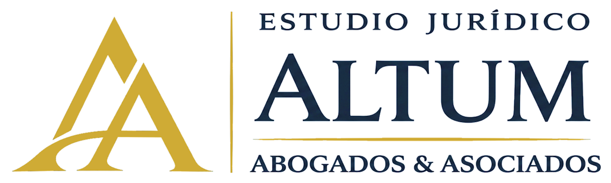

Líneas de servicio
Encuentra el equipo adecuado para tu consulta o proyecto.

Centro de Formación y Capacitación Profesional
Ofrece formación continua, cursos, diplomados y programas de especialización. Desarrolla asistencia técnica, investigación aplicada y consultoría para profesionales y organizaciones.
- Gestión pública, planeamiento, presupuesto y modernización
- Inversiones, contrataciones y obras públicas
- Derecho, seguridad, ambiente y transformación digital
- Unidad responsable
- Dirección Académica
- Documento de referencia
- Resolución de Gerencia General N.° 00012-2025-AL/GG

Constructora & Consultora Altum Obras e Inversiones
Acompaña a las organizaciones desde la formulación de una iniciativa de infraestructura o inversión hasta su ejecución y seguimiento.
- Estudios, proyectos y expedientes técnicos
- Consultoría, supervisión y ejecución de obras
- Control técnico, seguridad y gestión socioambiental
- Unidad responsable
- Dirección de Proyectos e Inversiones
- Documento de referencia
- Resolución de Gerencia General N.° 00019-2026-AL/GG

Altum Abogados & Asociados
Asesora a personas y organizaciones en la prevención y atención de contingencias. Acompaña la toma de decisiones con análisis normativo y estrategia jurídica.
- Consultoría y elaboración de contratos y documentos
- Defensa, representación y gestiones legales
- Seguimiento de expedientes y control de plazos
- Unidad responsable
- Subdirección de Servicios Legales
- Documento de referencia
- Resolución de Gerencia General N.° 00021-2026-AL/GG

Altum Contadores & Asociados
Apoya a empresas y emprendimientos en el cumplimiento de sus obligaciones, la planificación financiera y la organización de su información contable.
- Registros, cierres contables y reportes financieros
- Declaraciones, vencimientos y requerimientos tributarios
- Asesoría empresarial y control documentario
- Unidad responsable
- Subdirección de Servicios Tributarios y Contables
- Documento de referencia
- Resolución de Gerencia General N.° 00020-2026-AL/GG